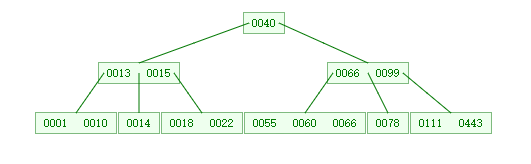
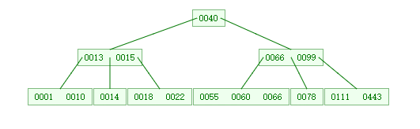

原文
接着上一篇对红黑树的分析，本文对B树，及其应用进行介绍。
http://tech.meituan.com/mysql-index.html mysql性能 慢查询 分析
在一般情况下，红黑树的查找性能确实已经足够好了，但是在数据足够的大的情况下，比如说数据库中的数据，单纯的以红黑树的算法查找还是要花一定的时间，比如说数据库一般存储在磁盘上，而数据量大，树的深度必定高，磁盘IO读写过多（会导致磁盘频繁的移动，而移动就是最消耗时间的）。解决方案就是磁盘的一次查找能够缩小数据的范围，而不仅仅是2叉树的查找仅过滤掉一半的数据。如果 有一种算法可以使得每次查找后，能够过滤掉部分的数据，而不仅仅是一半的数据，这样效率很提高很多。因此类似2叉树的多叉树应运而生。
硬件
关于磁盘的硬件原理，网上有很多资料，在此不在详细介绍，本文只做介绍。记住一点，磁盘上的数据的读写时间由数据的定位（查找柱面号、盘面号、块号 通过移动臂确定柱面，盘片的旋转确定 磁道上的盘号）的查找时间，和位运算传输到内存的时间。前者比后者大的不是一个数据级的，因此，尽量减小数据的查找是提高查找速度的有效办法。
B树
B树 在国内也被人称为B-树。
B 树是为了磁盘或其它存储设备而设计的一种多叉（相对于二叉，B树每个内结点有多个分支，即多叉）平衡查找树。很多数据库系统用的就是 B树或者其变形的结构。
如下一颗高度为3，度树为3，阶树为4的树。
 
B树的性质 ：
用度或者阶定义数，大同小异。本质是一样的。以阶来定义，阶数为m， 每个结点的最小子树为[m/2] 的上界，向下取整数。最大为m-1。也就是说 内结点的最大子树为m。节点元素个数 [ceil(m / 2)-1]<= n <= m-1
而树的高度
关于B-Tree有一系列有趣的性质，例如一个度为d的B-Tree，设其索引N个key，则其树高h的上限为logd((N+1)/2），检索一个key，其查找节点个数的渐进复杂度为O(logdN)。从这点可以看出，B-Tree是一个非常有效率的索引数据结构。


如上图所示，是一个B树，节点中还要包含元素的值，而在总结点一定的情况下，每个结点所占的空间是相对稳定的，由为涉及到盘块大多的话，一个节点需要涉及到好几次IO，效率 不高，因此，在节点空间一定情况下，尽量存储多的元素个数。
B+ 树
B+-tree的内部结点并没有指向关键字具体信息的指针。因此其内部结点相对B 树更小。如果把所有同一内部结点的关键字存放在同一盘块中，那么盘块所能容纳的关键字数量也越多。一次性读入内存中的需要查找的关键字也就越多。相对来说IO读写次数也就降低了。
举个例子，假设磁盘中的一个盘块容纳16bytes，而一个关键字2bytes，一个关键字具体信息指针2bytes。一棵9阶B-tree(一个结点最多8个关键字)的内部结点需要2个盘快。而B+ 树内部结点只需要1个盘快。当需要把内部结点读入内存中的时候，B 树就比B+ 树多一次盘块查找时间(在磁盘中就是盘片旋转的时间)。
索引
MySQL官方对索引的定义为：索引（Index）是帮助MySQL高效获取数据的数据结构。而mysql不同的引擎使用不同的索引结构。 而本文研究的是B+树实现的索引。
使用B+树的原因
一般来说，索引本身也很大，不可能全部存储在内存中，因此索引往往以索引文件的形式存储的磁盘上。这样的话，索引查找过程中就要产生磁盘I/O消耗，相对于内存存取，I/O存取的消耗要高几个数量级，所以评价一个数据结构作为索引的优劣最重要的指标就是在查找过程中磁盘I/O操作次数的渐进复杂度。换句话说，索引的结构组织要尽量减少查找过程中磁盘I/O的存取次数。
而内存数据的读写不存在机械操作，仅与次数据相关，与数据的距离无关。
MySQL索引实现
myISAM索引实现
MyISAM引擎使用B+Tree作为索引结构，叶节点的data域存放的是数据记录的地址。下图是MyISAM索引的原理图：


在MyISAM中，主索引和辅助索引（Secondary key）在结构上没有任何区别，只是主索引要求key是唯一的，而辅助索引的key可以重复。
MyISAM的索引方式也叫做“非聚集”的，之所以这么称呼是为了与InnoDB的聚集索引区分。
InnoDB索引实现
虽然InnoDB也使用B+Tree作为索引结构，但具体实现方式却与MyISAM截然不同。
第一个重大区别是InnoDB的数据文件本身就是索引文件。从上文知道，MyISAM索引文件和数据文件是分离的，索引文件仅保存数据记录的地址。而在InnoDB中，表数据文件本身就是按B+Tree组织的一个索引结构，这棵树的叶节点data域保存了完整的数据记录。这个索引的key是数据表的主键，因此InnoDB表数据文件本身就是主索引。


第二个与MyISAM索引的不同是InnoDB的辅助索引data域存储相应记录主键的值而不是地址。换句话说，InnoDB的所有辅助索引都引用主键作为data域。使用辅助索引需要查找 两次索引。聚集索引这种实现方式使得按主键的搜索十分高效，但是辅助索引搜索需要检索两遍索引：首先检索辅助索引获得主键，然后用主键到主索引中检索获得记录。
MySQL中的索引可以以一定顺序引用多个列，这种索引叫做联合索引，一般的，一个联合索引是一个有序元组<a1, a2, …, an>，其中各个元素均为数据表的一列。
最左前缀原理
只能按指定的顺序，依次匹配，如果中间某一条件，无法精确匹配，则后面条件无用。
索引选择性与前缀索引
SELECT count(DISTINCT(title))/count(*) AS Selectivity FROM employees.titles;
前缀索引 可以减小联合索引的长度。前缀索引兼顾索引大小和查询速度，但是其缺点是不能用于ORDER BY和GROUP BY操作，也不能用于Covering index（即当索引本身包含查询所需全部数据时，不再访问数据文件本身）。
InnoDB的主键选择与插入优化
在使用InnoDB存储引擎时，如果没有特别的需要，请永远使用一个与业务无关的自增字段作为主键。
经常看到有帖子或博客讨论主键选择问题，有人建议使用业务无关的自增主键，有人觉得没有必要，完全可以使用如学号或身份证号这种唯一字段作为主键。不论支持哪种论点，大多数论据都是业务层面的。如果从数据库索引优化角度看，使用InnoDB引擎而不使用自增主键绝对是一个糟糕的主意。
上文讨论过InnoDB的索引实现，InnoDB使用聚集索引，数据记录本身被存于主索引（一颗B+Tree）的叶子节点上。这就要求同一个叶子节点内（大小为一个内存页或磁盘页）的各条数据记录按主键顺序存放，因此每当有一条新的记录插入时，MySQL会根据其主键将其插入适当的节点和位置，如果页面达到装载因子（InnoDB默认为15/16），则开辟一个新的页（节点）。
如果表使用自增主键，那么每次插入新的记录，记录就会顺序添加到当前索引节点的后续位置，当一页写满，就会自动开辟一个新的页。如下图所示：


这样就会形成一个紧凑的索引结构，近似顺序填满。由于每次插入时也不需要移动已有数据，因此效率很高，也不会增加很多开销在维护索引上。
如果使用非自增主键（如果身份证号或学号等），由于每次插入主键的值近似于随机，因此每次新纪录都要被插到现有索引页得中间某个位置：


此时MySQL不得不为了将新记录插到合适位置而移动数据，甚至目标页面可能已经被回写到磁盘上而从缓存中清掉，此时又要从磁盘上读回来，这增加了很多开销，同时频繁的移动、分页操作造成了大量的碎片，得到了不够紧凑的索引结构，后续不得不通过OPTIMIZE TABLE来重建表并优化填充页面。
因此，只要可以，请尽量在InnoDB上采用自增字段做主键。